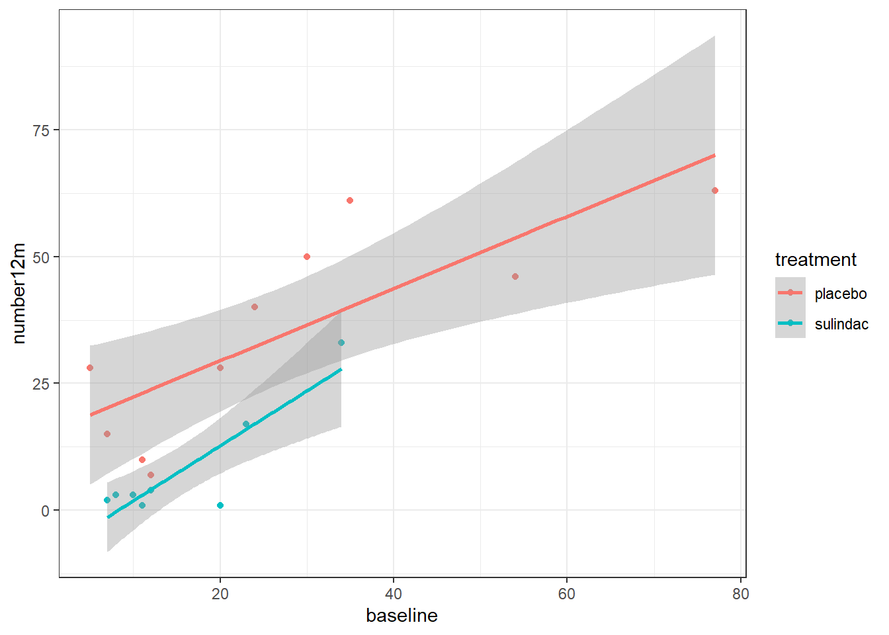

Chapter 6 Correlation and Regression
6.1 Intended Learning Outcomes
By the end of this chapter you should be able to:
- Perform and visualize Pearson and Spearman correlations
- Construct simple and multiple linear and logistic regression models
As with Comparing Means, this chapter is unlikely to cover everything you want to know about regression, particularly if you use advanced techniques for your own research. Instead, it will give you the basic coding skills you need to understand how such models are constructed from a programming perspective, and point you towards additional resources that have a heavier focus on statistical theory.
6.2 Walkthrough video
We encourage you to read the workbook and attempt each step on your own before watching the video as this will help consolidate your learning (it may feel harder but making mistakes is informative and will help you learn more in the long-run).
6.3 Set-up
- Create and save a new R Markdown document named
chapter_6.Rmd, get rid of the default template text from line 11 onwards. - Add the below code to the set-up chunk and then run the code to load the packages and data.You may need to install the packages if you don't have them installed already.
## Warning: package 'gapminder' was built under R version 4.3.2## Warning: package 'medicaldata' was built under R version 4.3.26.4 Correlation
As with ANOVA, there are a huge number of packages and functions you can use to perform correlations. In this course, we're going to use the correlation package which is part of the easystats framework which tries to provide a unifying framework for analysis similar to how the tidyverse is a collection of packages for data wrangling and visualization.
Once again we'll be jumping between different datasets that best fit the analysis technique we are demonstrating so do take the time to familiarize yourself with the variables before you get started.
First, we'll use the gapminder dataset and look at the relationship between life expectancy and GDP per capita in the Americas. For good measure let's first calculate some descriptive statistics about our two variables before we progress to looking at the relationship between them. Rather than use summarize(), we'll use the describe() function from the psych package which very easily produces a range of descriptive stats:
descriptives <- gapminder %>%
filter(continent == "Americas") %>%
select(lifeExp, gdpPercap) %>%
describe()We can then visualize the relationship:
gapminder %>%
filter(continent == "Americas") %>%
ggplot(aes(x = lifeExp, y = gdpPercap)) +
geom_point() +
geom_smooth()## `geom_smooth()` using method = 'loess' and formula = 'y ~ x'
We can see quite a clear relationship between life expectancy and GDP, however, we can also see from the scatterplot and the skew stats that it's not a linear relationship, GDP is positively skewed, a fact that becomes even clearer if we visualize GDP with a histogram:
## `stat_bin()` using `bins = 30`. Pick better value with `binwidth`.
There are different approaches to dealing with this skew, we'll show you two but other options are available and in addition to researching different theoretical approaches, it's worth looking at the help documentation for each analysis function to see all the options for more advanced analysis techniques. First, we could conduct a Spearman's correlation which is suitable for non-linear relationships as it transforms the data into ranks.
The correlation() function from the easystats correlation package is a very nice function for performing correlations. Not only does it contain a huge number of options and types of correlation analysis (look at the help documentation), but it has been built to work well with the tidyverse which means that you can pipe into it and the output it produces is already tidy:
spearman_results <- gapminder %>%
filter(continent == "Americas") %>%
correlation(select = "lifeExp", select2 = "gdpPercap", method = "spearman")
spearman_results| Parameter1 | Parameter2 | rho | CI | CI_low | CI_high | S | p | Method | n_Obs |
|---|---|---|---|---|---|---|---|---|---|
| lifeExp | gdpPercap | 0.7529151 | 0.95 | 0.6975748 | 0.7993259 | 1111870 | 0 | Spearman correlation | 300 |
You may also wish to apply a log transformation to the GDP data. Not only will this fix the skew but it's potentially more appropriate to look at the relationship between relative differences in GDP rather than absolute. We can produce the log transformation by using the functions mutate() and log() / log10() or log2() depending on which transformation we wish to use.
gapminder <- gapminder %>%
mutate(gdp_log = log10(gdpPercap))
# histogram of log transformed GDP
gapminder %>%
filter(continent == "Americas") %>%
ggplot(aes(x = gdp_log)) +
geom_histogram()
# scatterplot of log GDP and life expectancy
gapminder %>%
filter(continent == "Americas") %>%
ggplot(aes(x = lifeExp, y = gdp_log)) +
geom_point() +
geom_smooth() ## `stat_bin()` using `bins = 30`. Pick better value with `binwidth`.
## `geom_smooth()` using method = 'loess' and formula = 'y ~ x' It's not perfect but it's much better than it was and is much closer to a linear relationship (we'll assess whether this is really the case later) so we can use a Pearson correlation:
It's not perfect but it's much better than it was and is much closer to a linear relationship (we'll assess whether this is really the case later) so we can use a Pearson correlation:
pearson_results <- gapminder %>%
filter(continent == "Americas") %>%
correlation(select = "lifeExp", select2 = "gdpPercap", method = "pearson")
pearson_results| Parameter1 | Parameter2 | r | CI | CI_low | CI_high | t | df_error | p | Method | n_Obs |
|---|---|---|---|---|---|---|---|---|---|---|
| lifeExp | gdpPercap | 0.5583655 | 0.95 | 0.4751696 | 0.6316663 | 11.61878 | 298 | 0 | Pearson correlation | 300 |
6.5 Regression
6.5.1 Linear regression
Constructing a regression model is a great example of the fact that when it comes to R, data cleaning and wrangling is by far the most difficult task you face. To construct a simple linear regression model use the function lm() (linear model):
- The formula is expressed as
outcome by predictorso in this case, we're predicting life expectancy from GDP - We use the notation
data = .because we're piping in a filtered dataset to the function. If you wanted to run the regression on the full dataset, you'd remove the first two lines of pipes and just havedata = gapminder lm()constructs the model whilstsummary()summarizes the results.
mod1 <- gapminder %>%
filter(continent == "Americas") %>%
lm(formula = lifeExp ~ gdp_log, data = .)
summary(mod1)##
## Call:
## lm(formula = lifeExp ~ gdp_log, data = .)
##
## Residuals:
## Min 1Q Median 3Q Max
## -17.221 -4.761 1.184 4.736 15.006
##
## Coefficients:
## Estimate Std. Error t value Pr(>|t|)
## (Intercept) -19.068 4.824 -3.953 9.65e-05 ***
## gdp_log 22.377 1.285 17.412 < 2e-16 ***
## ---
## Signif. codes: 0 '***' 0.001 '**' 0.01 '*' 0.05 '.' 0.1 ' ' 1
##
## Residual standard error: 6.591 on 298 degrees of freedom
## Multiple R-squared: 0.5043, Adjusted R-squared: 0.5026
## F-statistic: 303.2 on 1 and 298 DF, p-value: < 2.2e-16You can also pass the model summary to tidy() to pass the model stats to a tidy table:
| term | estimate | std.error | statistic | p.value |
|---|---|---|---|---|
| (Intercept) | -19.06798 | 4.823726 | -3.952957 | 9.65e-05 |
| gdp_log | 22.37744 | 1.285209 | 17.411526 | 0.00e+00 |
It looks like we have significant model where GDP predicts life expectancy. This probably isn't a shock to anyone but let's check that our use of the linear model was really appropriate by assessing the model performance.
6.5.2 Model performance
The performance package is also part of the easystats framework and provides a number of elegant and simple functions for assessing model performance. If you use any type of modelling in your research, we strongly recommended checking out the performance help documentation and website for more information on what it can do.
You can test the assumptions of your model separately using functions like check_heteroscedasticity(), however, there's a single comprehensive function check_model() that provides an overview:
**If you get the error Error: The RStudio 'Plots' window is too small to show this set of plots. Please make the window larger. literally resize the bottom right window pane by dragging it with your cursor and then re-run the code.
## Not enough model terms in the conditional part of the model to check for
## multicollinearity.
It's not perfect, you can still see the influence of the skew, but it's good enough and we'll leave the in-depth theoretical debates about model performance to the statisticians!
6.5.3 Multiple regression
Adding additional variables to your regression model is extremely simple. For this analysis, let's use the polyps dataset and as before, we'll remove the extreme outliers. This time, we're going to construct a model to see if we can predict the number of polyps after 12 months as a function of the baseline number of polyps (it's reasonable to assume that people with a baseline high number of polyps are going to have more polyps after treatment than those who started with a low number, even if the treatment is successful) and which treatment group they were in.
First, let's visualize this relationship.
polyps_outliers <- polyps %>%
filter(baseline < 100) # keep only those values less than 100
polyps_outliers %>%
ggplot(aes(x = baseline, y = number12m, colour = treatment)) +
geom_point() +
geom_smooth(method ="lm")## `geom_smooth()` using formula = 'y ~ x'## Warning: Removed 2 rows containing non-finite values (`stat_smooth()`).## Warning: Removed 2 rows containing missing values (`geom_point()`).
Now, construct and summarize the model adding in two predictors:
##
## Call:
## lm(formula = number12m ~ baseline + treatment, data = polyps_outliers)
##
## Residuals:
## Min 1Q Median 3Q Max
## -16.1177 -7.6670 -0.9539 6.7388 20.5473
##
## Coefficients:
## Estimate Std. Error t value Pr(>|t|)
## (Intercept) 14.0733 5.1018 2.759 0.01463 *
## baseline 0.7537 0.1421 5.305 8.82e-05 ***
## treatmentsulindac -17.8498 5.2023 -3.431 0.00371 **
## ---
## Signif. codes: 0 '***' 0.001 '**' 0.01 '*' 0.05 '.' 0.1 ' ' 1
##
## Residual standard error: 10.37 on 15 degrees of freedom
## (2 observations deleted due to missingness)
## Multiple R-squared: 0.794, Adjusted R-squared: 0.7665
## F-statistic: 28.9 on 2 and 15 DF, p-value: 7.156e-06If you want to specify as interaction term, you can do so using the notation predictor1:predictor2:
mod3 <-lm(number12m ~ baseline + treatment + baseline:treatment, data = polyps_outliers)
summary(mod3)##
## Call:
## lm(formula = number12m ~ baseline + treatment + baseline:treatment,
## data = polyps_outliers)
##
## Residuals:
## Min 1Q Median 3Q Max
## -16.7752 -6.5608 0.4709 4.6696 20.8654
##
## Coefficients:
## Estimate Std. Error t value Pr(>|t|)
## (Intercept) 15.2399 5.3496 2.849 0.012881 *
## baseline 0.7113 0.1526 4.660 0.000368 ***
## treatmentsulindac -24.1491 9.2957 -2.598 0.021064 *
## baseline:treatmentsulindac 0.3709 0.4513 0.822 0.424934
## ---
## Signif. codes: 0 '***' 0.001 '**' 0.01 '*' 0.05 '.' 0.1 ' ' 1
##
## Residual standard error: 10.49 on 14 degrees of freedom
## (2 observations deleted due to missingness)
## Multiple R-squared: 0.8034, Adjusted R-squared: 0.7613
## F-statistic: 19.08 on 3 and 14 DF, p-value: 3.241e-056.5.4 Prediction
Once we have constructed our models, we can the model to predict new values. For example, let's create a table of data from new patients where we have their baseline number of polyps and which treatment condition they're due to receive.
new_patients <- tibble(
participant_id = 1:10,
baseline = c(20, 25, 30, 35, 40, 45, 50, 55, 60, 65),
treatment = c("sulindac", "placebo", "sulindac", "placebo", "sulindac", "placebo", "sulindac", "placebo", "sulindac", "placebo")
)We can then use mutate() and predict() to create a new variable predicted_12m that uses the model constructed in mod2 to predict how many polyps these number patients would have at 12 months, taking into account their baseline and treatment group. Note that in order for the predict() function to work, you need to have data on all predictors entered in the original model (in this case baseline and treatment).
| participant_id | baseline | treatment | predicted_12m |
|---|---|---|---|
| 1 | 20 | sulindac | 11.29743 |
| 2 | 25 | placebo | 32.91576 |
| 3 | 30 | sulindac | 18.83441 |
| 4 | 35 | placebo | 40.45273 |
| 5 | 40 | sulindac | 26.37139 |
| 6 | 45 | placebo | 47.98971 |
| 7 | 50 | sulindac | 33.90837 |
| 8 | 55 | placebo | 55.52669 |
| 9 | 60 | sulindac | 41.44535 |
| 10 | 65 | placebo | 63.06367 |
6.5.5 Logistic regression
Constructing a logistic regression model follows a very similar syntax but uses the function glm() (generalized linear model) rather than lm() as we've used previously. For this model, we'll use the opt dataset to see if we can predict whether a patient has chlamydia. First, let's create a reduced dataset of the variable we want to include in the model and check out our variables:
chlamydia_dat <- opt %>%
select(PID, Age, Black, White,Nat.Am, Asian, Hisp, Education, Chlamydia)
summary(chlamydia_dat)## PID Age Black White Nat.Am Asian
## Min. :100034 Min. :16.00 No :451 No :588 No :573 No :816
## 1st Qu.:200501 1st Qu.:22.00 Yes:372 Yes:235 Yes:250 Yes: 7
## Median :202717 Median :25.00
## Mean :252541 Mean :25.98
## 3rd Qu.:302208 3rd Qu.:30.00
## Max. :402477 Max. :44.00
## Hisp Education Chlamydia
## :145 8-12 yrs :479 :444
## No :328 LT 8 yrs :154 No :324
## Yes:350 MT 12 yrs:190 Yes: 55
##
##
## The summary output reveals an interesting quirk of this dataset. There's missing data in the chlamydia and Hisp variables but it's not represented as a missing value. Instead, it's been coded as blank but inexplicably not actually blank - R thinks there is a type of data in the cell otherwise it would show up as NA.
To deal with this we could either convert the blanks to NAs. This dataset is so badly coded that it took several attempts of trial-and-error to figure out what the blank was - it turns out it is three spaces and also "No" is stored as "No " with a space after it. Because we need our outcome to be a binary variable, we can use droplevels to get rid of the blank grouping (try removing the call to droplevels then run summary() to see how the data are represented).
chlamydia_dat2 <- chlamydia_dat %>%
mutate(Chlamydia = na_if(Chlamydia, " "),
Hisp = na_if(Hisp, " ")) %>%
droplevels()
summary(chlamydia_dat2)## PID Age Black White Nat.Am Asian
## Min. :100034 Min. :16.00 No :451 No :588 No :573 No :816
## 1st Qu.:200501 1st Qu.:22.00 Yes:372 Yes:235 Yes:250 Yes: 7
## Median :202717 Median :25.00
## Mean :252541 Mean :25.98
## 3rd Qu.:302208 3rd Qu.:30.00
## Max. :402477 Max. :44.00
## Hisp Education Chlamydia
## No :328 8-12 yrs :479 No :324
## Yes :350 LT 8 yrs :154 Yes : 55
## NA's:145 MT 12 yrs:190 NA's:444
##
##
## We can then construct and summarize our model using glm() and summary() which tells us that the only significant predictor of having chlamydia from the measures we included is age:
log_mod1 <- glm(formula = Chlamydia ~ Age + Black + White + Nat.Am + Asian + Hisp + Education, family = binomial, data = chlamydia_dat2)
summary(log_mod1)##
## Call:
## glm(formula = Chlamydia ~ Age + Black + White + Nat.Am + Asian +
## Hisp + Education, family = binomial, data = chlamydia_dat2)
##
## Coefficients:
## Estimate Std. Error z value Pr(>|z|)
## (Intercept) 0.14010 1.37969 0.102 0.91912
## Age -0.10035 0.03870 -2.593 0.00951 **
## BlackYes 0.91122 1.03929 0.877 0.38061
## WhiteYes 0.49145 0.93914 0.523 0.60077
## Nat.AmYes 0.04426 1.03917 0.043 0.96602
## AsianYes -12.59871 882.74399 -0.014 0.98861
## HispYes -0.09363 0.69314 -0.135 0.89255
## EducationLT 8 yrs -1.08588 0.78482 -1.384 0.16648
## EducationMT 12 yrs 0.16801 0.41405 0.406 0.68491
## ---
## Signif. codes: 0 '***' 0.001 '**' 0.01 '*' 0.05 '.' 0.1 ' ' 1
##
## (Dispersion parameter for binomial family taken to be 1)
##
## Null deviance: 246.23 on 310 degrees of freedom
## Residual deviance: 224.21 on 302 degrees of freedom
## (512 observations deleted due to missingness)
## AIC: 242.21
##
## Number of Fisher Scoring iterations: 136.6 Further resources
There's so much more you can do in R when it comes to analysis techniques that we can't claim to have even begun to scratch the surface here. What's important is that from a coding perspective, you now have all the programming skill and knowledge you need to extend and expand your analytic workflows in R: from here on out, it's down to statistical theory and knowledge to take you further (which is why this course stops here, because Emily knows her limits).
If you have specific analytic techniques you'd like to use in R, please let us know ahead of the second office hour and we'll collate extra resources specific to your needs to help support your goals and Javan will also answer any questions you have about analytic techniques using the All of Us Researcher Workbench.